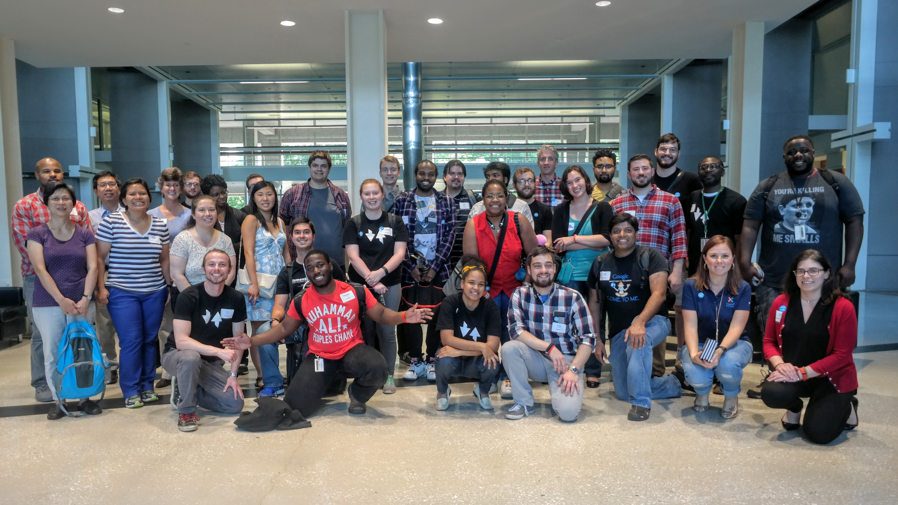

What is It?
On January 27, 2016, Governor Jack Markell signed Executive Order 57, empowering the State to create the Delaware Open Data Portal. On October 19, 2016, the portal was officially launched, hosting over 100 datasets available for public use. Anyone is free to reuse and repurpose the data, whether that is to help their community, to build an innovative company, or simply to learn more about the state.
With a new administration in place, Governor Carney and his transition team identified open data as key for economic development in Delaware. The Open Data Challenge aims to build on this work by spurring civic innovation in the state.
The Open Data Challenge is a five month long series of events designed to solve community issues and cultivate civic technology skills. It is a collaborative effort between the Technology Forum of Delaware, Open Data Delaware, and the Government Information Center. The events include a series of 6 workshops curated by Open Data Delaware, the Tech Forum of Delaware’s Idea Challenge, and the National Day of Civic Hacking (NDoCH) in June. Winning teams from the NDoCH event have the opportunity to earn cash prizes following completion of their project.
A great community is able to help the people in it find the resources that they need to be successful. Perhaps they are looking for a preschool for their child. Perhaps they need healthcare. Perhaps they are looking for convenient transportation. For the 2017 Open Data Challenge, we’re looking for solutions to access issues throughout Delaware. Find out more at the upcoming Idea Challenge!